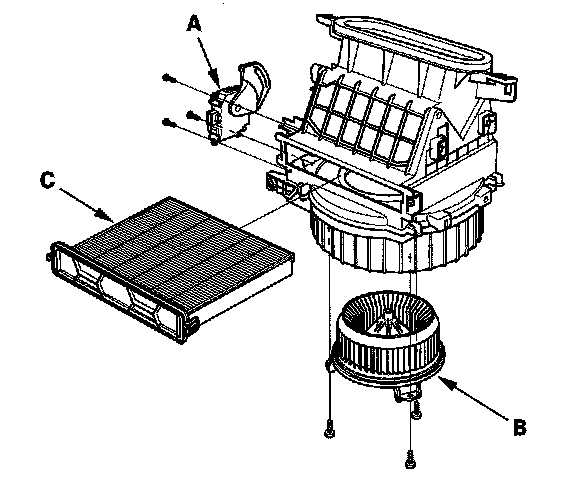

Blower Unit Component Replacement
Blower Unit Component Replacement
Note these items when overhauling the blower unit:
- The recirculation control motor (A), front blower motor (B) and the dust and pollen filter (C) can be replaced without removing the blower unit.
- Before reassembly, make sure that the recirculation control linkage and door move smoothly without binding.
- After reassembly, make sure the recirculation control motor runs smoothly.